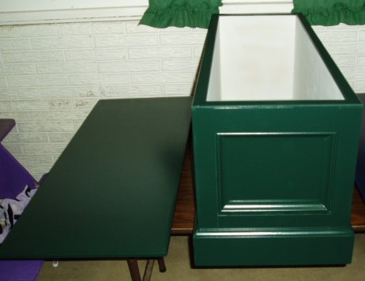

I made two of these. One for my Mother, and one for my Sister. The plans came from WoodSmith #153. The one pictured is my Sister's, I'm not happy with the paint job on my Mother's yet, and it has to be redone. Painting dark blue, either Oil or Latex, brush, roller, sprayer, well, it just sucks.
Here are the two seats before final sanding and painting. I used Sherwin-Williams All-Surface Enamel with my Harbor Freight HVLP turbine spray unit. My Mother's was the first one I did, and well the dark color along with me learning how to use the sprayer properly causes some less than desirable results. I also attempted to spray the inside of my Mother's and this caused me to come up a little shy on paint (only bought a quart). I skipped this on my Sister's and also had my thinning ratios down better. For those that are wondering, I found that using the included viscosity cup that thinning down to a count of 10 One Thousands worked well.
This was my first full project with my new Craftsman 22114 table saw. Also receiving a heavy workout were my Delta 33-255L CMS and my Porter-Cable Brad Nailer. While this is listed as one of WoodSmith's "Weekend Projects" it took me considerable more time, but I did work on both at the same time. This was also my first chance to use my 22-580 Planer on the poplar used to frame in the box. I think my planning, cutting and assembly all were much better on this projects than previous ones, but I rushed the finishing too much being up against a time crunch for Christmas. Not much of an excuse, but I've learned a little more, especially that Oil based paint stinks for a very long time.
For those that are curious, the main box is made out of 1/2" Birch Plywood. The sides with rabbets and screws, the bottom daddoed in. This box is then framed in with Poplar. The bottom enclosed with some base molding, and then all of the boxes from the poplar have cap molding added. This was a fairly tedious step. The top of the plywood box with the poplar framing has 1/4" poplar strips edge banding it. The lid is a piece of the 1/2" birch plywood with 1/4 poplar edge banding strips again, as well as the cap molding to hold it in place.
This isn't the greatest piece of furniture in the world, and not up to the standards of a lot of pieces I see pictures of on the internet, however
I continued to learn about the great hobby of Woodworking. I was able to relax and forget about the stress of my day job while working on these, and
I have a gift for my family members that wasn't just picked up off of the shelf and a little plastic card ran through a machine. Of course, all the parts
that went into it were bought that way, but I cut, nailed, measured, sanded and painted the final outcome with my two hands. Ultimately a very satisfying
experience.
After primer.

Side view of finished seat.